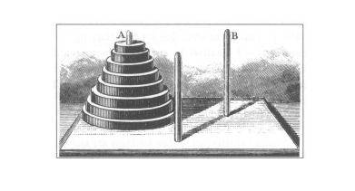
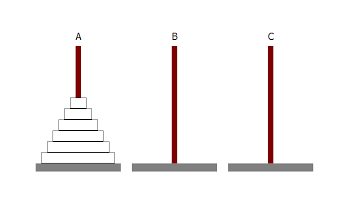

THE TOWER OF HANOI
问题描述
汉诺塔（也称河内塔）是有法国数学家爱德华·卢卡斯于1883年发明的一道智力题。它源于印度的一个古老传说：大梵天创造世界的时候做了三根钻石柱子，在一根柱子上从下往上按照大小顺序摞着64片黄金圆盘。大梵天命令一组牧师把圆盘从下面开始按大小顺序重新摆放在另一根柱子上。并且规定，在小圆盘上不能放大圆盘，在三根柱子之间一次只能移动一个圆盘。据说牧师们夜以继日地工作，当他们完成任务时，那座塔就将坍塌，世界也将毁灭。
汉诺塔问题是这样规定的：如下图，一个由8个圆盘组成的塔，这些圆盘从下向上按照大小递减的方式套在一根柱子上，我们的目的是要将这根柱子上的所有圆盘移动到另一根柱子上，每次只能移动一个圆盘，且在移动过程中较大的圆盘不能放置在较小的圆盘上面。
已经证明这个智力题有解，现在问题来了：我们能做到的最好的解法是什么？也就是说，要完成这项任务至少移动多少次才是必须且足够的？
解决这样的问题的最好方法是对它稍加推广，印度传说中的塔有64个圆盘，汉诺塔问题中的塔有8个圆盘，我们将这个问题推广为有n个圆盘，这样我们简化一下这个问题。如下图，n个圆盘套在A柱上，按照与汉诺塔相同的规则移动到C柱上，至少需要移动多少次。
数学分析
我们假设Tn 是根据规则将n个圆盘从一根柱子移动到另一根柱子所需要的最少移动次数。那么T0显然是0，T1 = 1，T2 = 3。
现在我们改变一下视角，来考虑大的情形：怎样才能移动一个大的塔呢？将n个圆盘从A柱移动到C柱可以分三步来完成，首先将A柱上面的n-1个圆盘从A柱移动到B柱上，这一步需要移动Tn-1次。然后将A柱上剩下的那个最大的盘移动到C柱上，这一步需要移动1次。最后将B柱上的n-1个盘移动到C柱上，这一步也需要移动Tn-1次。所以n(n>0)个圆盘移动2Tn-1+1次是足够了的，但是我们并没有证明2Tn-1+1是最少的移动次数，因此：
$$
T_n \leq 2T_{n-1} + 1, n > 0
$$
那么还有更好的办法吗？实际上没有，因为我们迟早必须移动最大的那个圆盘。当我们这样做的时候，那n-1个圆盘必须已经在另外某根柱子上，而这一步至少需要移动Tn-1次，这样我们才能把最大的那个盘移动到第三根柱子上（大盘不能放在小盘上面），移动完最大的盘之后，我们必须把n-1个小的圆盘（此时它们全部处于同一根柱子上）移到最大的盘的上面，这也至少需要移动Tn-1次，因此：
$$
T_n \geq 2T_{n-1} + 1,n > 0
$$
把这两个不等式与n=0时的平凡解结合在一起就得到：
$$
\begin{cases} T_n = 0,n = 0\ \ T_n = 2T_{n-1} + 1,n > 0 \end{cases}
$$
得到这样一个递归式之后，我们就可以通过T0求出T1、由T1求出T2、由T2求出T3…最终求出任意的Tn，这交给计算机程序是很容易计算出Tn的。但是，如果没有计算机让你去计算T64，相信并没人会愿意从T1一步一步计算到T64。那么有没有一个既漂亮又简介的式子供我们快捷计算Tn呢，即使n很大？
我们先在递归式方程的两边加上1：
$$
\begin{cases} T_n + 1 = 1,n = 0\ \ T_n + 1 = 2T_{n-1} + 2,n > 0 \end{cases}
$$
现在假设Un = Tn + 1，那么就有：
$$
\begin{cases} U_n = 1,n = 0\ \ U_n = 2U_{n-1},n > 0 \end{cases}
$$
显而易见，这个递归方程的解为Un = 2n（你可以通过数学归纳法证明），从而Tn = 2n - 1。
代码求解
下面给出根据上述分析求解结果的Java代码，因计算结果太大，计算过程中均使用BigInteger代替基本数据类型进行运算。
代码
package com.rul.mathematics.hanoi;
import java.math.BigInteger;
/**
* THE TOWER OF HANOI
*
* @author LuoRu
*/
public class Hanoi {
public static void main(String[] args) {
System.out.println("递归求解：T8 = " + getAnswerByRecursive(8) +
" T64 = " + getAnswerByRecursive(64));
System.out.println("迭代求解：T8 = " + getAnswerByIterate(8) +
" T64 = " + getAnswerByIterate(64));
System.out.println("公式求解：T8 = " + getAnswerByFormula(8) +
" T64 = " + getAnswerByFormula(64));
}
/**
* 递归方式求解
*
* @param n 汉诺塔圆盘数量
* @return 移动n个盘最少需要移动的次数
*/
public static BigInteger getAnswerByRecursive(int n) {
if (n == 0) {
return new BigInteger("0");
}
return getAnswerByRecursive(n - 1)
.multiply(new BigInteger("2"))
.add(new BigInteger("1"));
}
/**
* 迭代方式求解
*
* @param n 汉诺塔圆盘数量
* @return 移动n个盘最少需要移动的次数
*/
public static BigInteger getAnswerByIterate(int n) {
BigInteger answer = new BigInteger("0");
for (int i = 1; i <= n; i++) {
answer = answer.multiply(new BigInteger("2"))
.add(new BigInteger("1"));
}
return answer;
}
/**
* 一般求解
*
* @param n 汉诺塔圆盘数量
* @return 移动n个盘最少需要移动的次数
*/
public static BigInteger getAnswerByFormula(int n) {
BigInteger answer = new BigInteger("2");
return answer.pow(n).subtract(new BigInteger("1"));
}
}结果
递归求解：T8 = 255 T64 = 18446744073709551615
迭代求解：T8 = 255 T64 = 18446744073709551615
公式求解：T8 = 255 T64 = 18446744073709551615可以发现，我们上面得出的Tn = 2n - 1与递归式的结果是一致的。
假设牧师们1秒钟移动圆盘1次，一天24小时不间断移动，一年算365天，在不犯错的情况下需要大概584942417355年才能将64个盘子移动完。所以牧师们的任务还没有完成，他们现在仍然在移动圆盘。